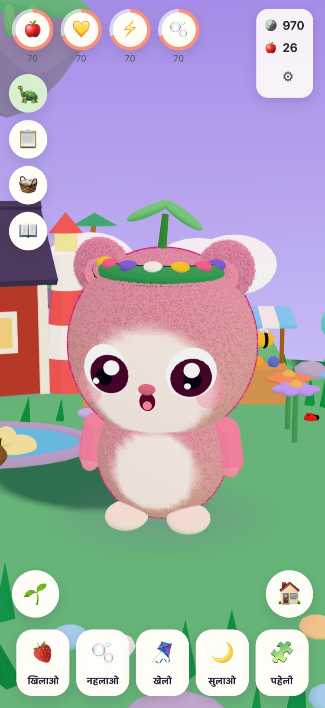
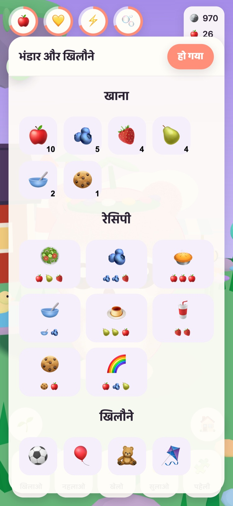
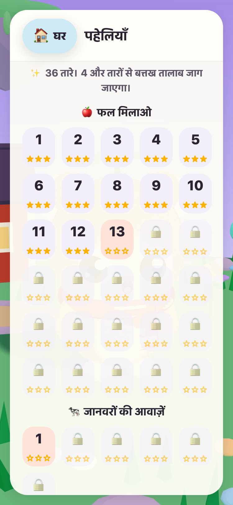
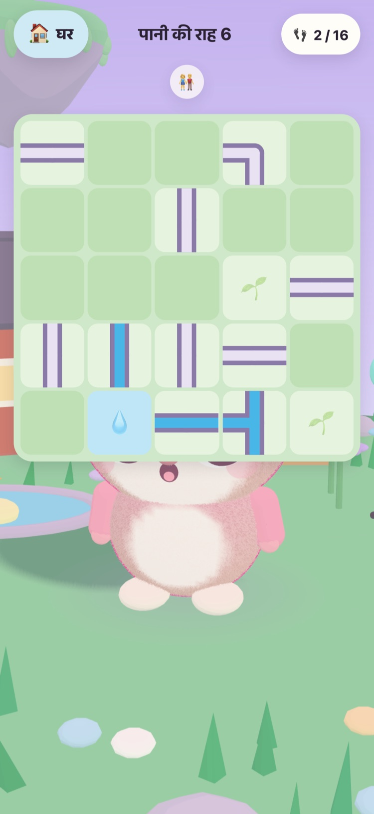
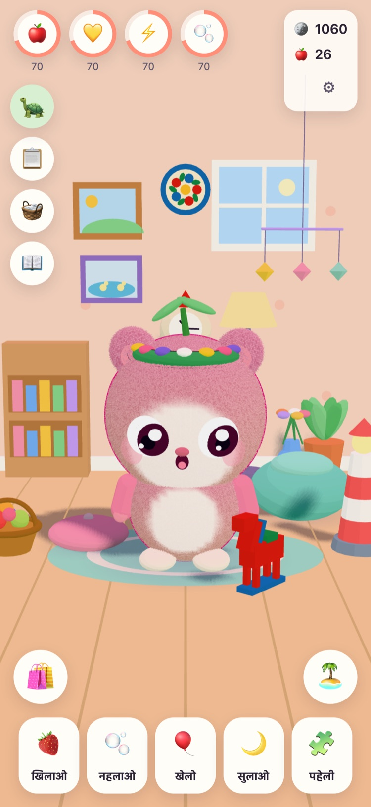
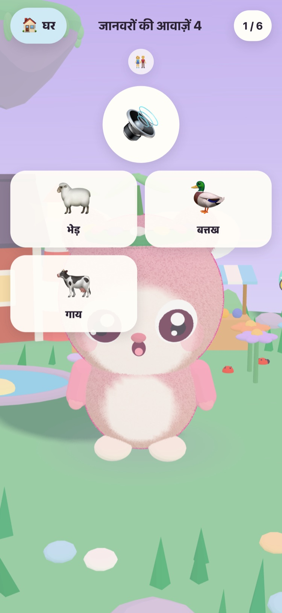

JUNOLittle Worlds
एक Juno को अंडे से निकालिए, उसकी देखभाल कीजिए, और हल्की-फुल्की पहेलियाँ सुलझाकर एक तैरते टापू को जगाइए। 6 से 10 साल के बच्चों के लिए एक शांत खेल, iPhone और iPad पर।
नमस्ते! मुझे तीन गरम अंडे मिले हैं। तुम्हारा कौन-सा है?
- कोई विज्ञापन नहीं
- कोई ट्रैकिंग नहीं
- कोई अकाउंट नहीं
- न टाइमर, न दबाव






बच्चे का अपना एक छोटा दोस्त
नानाजी Tintin, वे बूढ़े कछुए जो हरियाली टापू की देखभाल करते हैं, उन्हें तीन गरम अंडे मिले हैं। आपका बच्चा एक अंडा चुनता है और उसमें से जो निकलता है, उसका नाम रखता है। उसके बाद Juno उसका अपना है: उसे खिलाना, नहलाना, उसके साथ खेलना और उसे झपकी के लिए सुलाना।
-
एक अंडा चुनिए
तीन गरम अंडे, तीन रंग। आपका बच्चा एक चुनता है और उसे फूटते हुए देखता है।
-
नाम रखिए, प्यार कीजिए
खिलाना, नहलाना, खेलना और झपकी। Juno दिखाता है कि उसे कैसा लग रहा है, और जैसे-जैसे दोस्ती बढ़ती है, वह भी बड़ा होता है।
-
टापू को जगाइए
पहेली का हर तारा हरियाली टापू पर रोशनी वापस लाता है, जब तक कि फूल, मधुमक्खियाँ और बत्तखें फिर से घर न लौट आएँ।
खिलाना, नहलाना, खेलना, झपकी
तरह-तरह का खाना और खिलौने, नहाते समय बुलबुले, और एक Juno जो दिखाता है कि उसे कैसा लग रहा है। ज़रूरतें धीरे-धीरे घटती हैं और कभी शून्य तक नहीं पहुँचतीं, इसलिए Juno कभी खोता नहीं।
57 हल्की-फुल्की पहेलियाँ
फल मिलाओ, यादों का बगीचा, और असली रिकॉर्डिंग वाली जानवरों और गाड़ियों की आवाज़ें। तारे चालों से मिलते हैं, समय से कभी नहीं, और दोबारा कोशिश करना हमेशा मुफ़्त है।
एक टापू जो जाग उठता है
फूलों का बगीचा मधुमक्खियों के साथ खुलता है, बत्तख तालाब पानी और बत्तखों से भर जाता है, और क्यारियों में बीज उगकर सेब और स्ट्रॉबेरी बन जाते हैं।
सजाने के लिए एक आरामदेह कमरा
पहेलियों और रोज़ की चुनौतियों से मिले सिक्कों से Juno के कमरे की सजावट और पहनने के कपड़े ख़रीदे जा सकते हैं। सिक्कों की दुकान में किसी भी चीज़ पर असली पैसे नहीं लगते।
पढ़कर सुनाना
जो बच्चे अभी पढ़ नहीं सकते, उनके लिए नानाजी Tintin हर पंक्ति अपनी गर्मजोशी भरी आवाज़ में पढ़कर सुनाते हैं। दोबारा सुनने के लिए उन्हें टैप करें।
माता-पिता के लिए
पैरेंटल गेट के पीछे: भाषा, पढ़कर सुनाना, आवाज़ें, सोने का समय और ब्रेक की एक हल्की याद। सोने के समय Juno सो जाता है, और पहेलियाँ सुबह तक इंतज़ार करती हैं।
21 भाषाओं में बात करता है
नानाजी Tintin आपके बच्चे से उसकी अपनी भाषा में बात करते हैं। “माता-पिता का कोना” सेक्शन में कोई भाषा चुनें, या खेल को डिवाइस की भाषा अपनाने दें।
English Svenska Dansk Norsk Suomi Deutsch Nederlands Français Español Italiano Português (Brasil) Polski Русский Ελληνικά Türkçe Bahasa Melayu Kiswahili हिन्दी 日本語 한국어 简体中文
एक नाना का बनाया हुआ
JUNO को स्वीडन में एक नाना ने अपनी नातिन के लिए बनाया: एक ऐसा खेल जिसे उसे खेलते देखकर उन्हें ख़ुशी हो। खेल के कछुए, नानाजी Tintin, वही हैं।
इसलिए नियम सीधे-सादे हैं। ऐसा कुछ नहीं जो दबाव डाले, ऐसा कुछ नहीं जो बहकाए, और ऐसा कुछ नहीं जो आपके बच्चे के बारे में कोई भी जानकारी इकट्ठा करे।
मुफ़्त, बिना विज्ञापन
JUNO को डाउनलोड करना मुफ़्त है और इसमें न विज्ञापन हैं, न ट्रैकिंग, न कोई अकाउंट। आपका बच्चा जो कुछ भी करता है, वह आपके डिवाइस पर ही रहता है। प्राइवेसी पेज देखें।
कोई बड़ा व्यक्ति “माता-पिता का कोना” सेक्शन में, पैरेंटल गेट के पीछे, JUNO Plus या विंटर पैक ख़रीद सकता है। दोनों एक बार की ख़रीद हैं, जिन्हें आप वापस पा (रीस्टोर कर) सकते हैं और अपने परिवार के साथ बाँट सकते हैं।